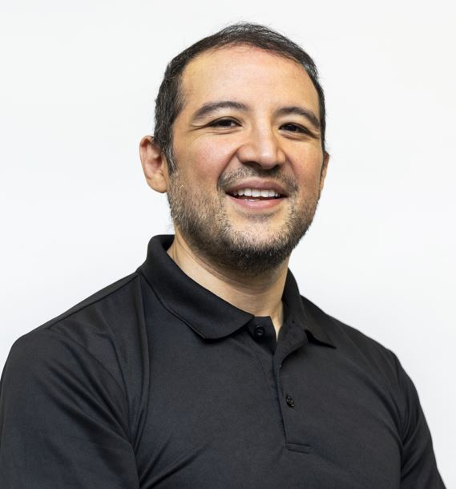

01
Leadership & performance
Strategic leadership, follower preferences, performance theory, and the individual and organizational conditions that shape effective leadership.
Assistant Professor of Human Resources & Organizational Behavior
I study how leaders, people, and institutions perform—and how scholarship’s influence can be measured more fairly. My work combines management theory with bibliometrics, generative AI, big-data methods, and psychological measurement.

I am a management scholar interested in questions that sit at the intersection of leadership, performance, technology, and research methods. I earned my Ph.D. in Business Administration–Management from Iowa State University and currently teach organizational behavior at Rutgers University–Camden.
Strategic leadership, follower preferences, performance theory, and the individual and organizational conditions that shape effective leadership.
Generative AI, machine learning, text mining, and big-data applications that help researchers operationalize complex management and psychological constructs.
More transparent and context-sensitive approaches to assessing influence across researchers, teams, institutions, journals, and career stages.
Meta-analysis, thought experiments, vignette studies, bibliometric methods, and unobtrusive approaches to measuring personality and behavior.
The CSII is an open and transparent tool designed to evaluate management scholarship in context. It moves beyond raw citation counts by considering quality, quantity, disciplinary context, and time.
Selected peer-reviewed and invited publications. Citation figures shown here are rounded from Google Scholar data available in July 2026.
Human Resource Management Journal, 33(3), 606–659 · Budhwar, Chowdhury, Wood, Aguinis, Bamber, Beltran, et al.
Organizational Dynamics, 53(1), 101029 · Aguinis, Beltran, & Cope
Academy of Management Annals, 18(2), 600–625 · Marshall, Aguinis, & Beltran
Journal of Organizational Behavior, 44(3), 544–560 · Aguinis, Beltran, Archibold, Jean, & Rice
Journal of Management Scientific Reports, 2(2), 135–153 · Aguinis, Beltran, & Marshall
Academy of Management Perspectives, 38(3), 368–391 · Beltran, Aguinis, Shuumarjav, & Mercado
My teaching connects organizational behavior theory to real workplace decisions, leadership challenges, careers, and emerging technologies. I emphasize reflection, active discussion, practitioner engagement, and evidence-based application.
Undergraduate instruction at Rutgers University–Camden and Iowa State University, delivered in in-person and hybrid formats. Topics include motivation, leadership, teams, stress, personality, decision-making, culture, ethics, and performance.
My service focuses on mentoring students and emerging scholars, expanding access to doctoral education, and supporting communities that strengthen representation in management research and education.
Selected current roles and activities
Board of Directors; Communications Chair; Webmaster. Supporting a national network of Latino management faculty and emerging scholars.
Annual conference speaker and mentor; technical workshop instructor; advocate for students from historically underrepresented backgrounds.
Conference reviewer and member of the Research Methods Division and CARMA Consortium.
Selected recognition
Organizational Behavior Division, Academy of Management · 2026
Front Runner New Jersey · 2025
Wiley · 2024
CSII and scholarly impact; vignette studies and thought experiments · Philadelphia, PA
I welcome conversations about research collaboration, scholarly impact, organizational behavior, methods workshops, mentoring, and speaking opportunities.